AI that understands intent—not just keywords
Cekat.AI's chat agents understand natural language and context, enabling intent-aware, multilingual conversations that feel human, not robotic.
AI-powered customer conversations
Never miss a message. Never miss a sale. AI handles every channel, 24/7.
14-day free trial · No credit card required · Set up in about 10 minutes

Trusted by teams at


Why Chat
Cekat.AI's chat agents understand natural language and context, enabling intent-aware, multilingual conversations that feel human, not robotic.
Cekat.AI supports WhatsApp (Official API), Instagram, website live chat, and other integrated platforms, with all interactions unified in one centralized chat interface.
When the AI detects complex or sensitive queries, it routes them to human agents with full context, so customers do not need to repeat previous messages.
How it works
Explore each part of the workflow. The supporting product view updates as you choose a step.
 Cekat Chat01 / 05
Cekat Chat01 / 05
Customer perspective
Outside of working hours, we rely on AI technology. Rumah Zakat can be reached 24/7, and we fully utilize AI once our working hours are over.
Cekat.AI Chat is an AI-powered conversational agent that automatically engages, understands, and responds to customer messages across platforms.
Yes. It supports omnichannel messaging including WhatsApp, Instagram, and website live chat.
No. You can configure and train the AI using business rules and sample phrases, without coding skills.
Cekat Chat
Engage customers faster, reduce operational load, and scale your business with AI-powered chat.